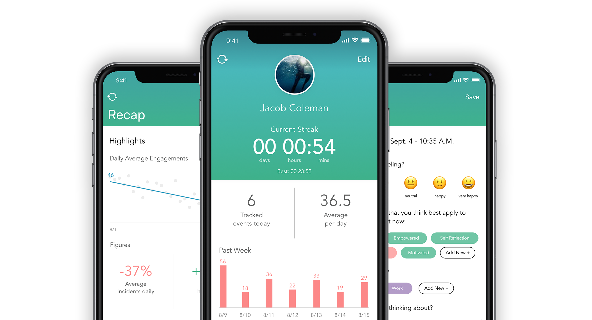

HabitAware
Situation
Every person has faced their own trials and tribulations with self-control. Most of these issues are confronted with a planned effort to minimize exposure, temptation etc. But what if you were completely unaware that you were engaging in the behavior?
The HabitAware team created a tech wearable and application to help those who suffer from Body-Focused Repeated Behaviors be more aware of their behavior. This simple increase in awareness has helped some individuals keep their BFRBs in check. But Aneela and her team at HabitAware know there is more they can do to. They approached our team to identify the features that would best fit the needs of their users.
Partner
HabitAware
Tools & Methods
Competitive Audit
Kano Analysis
Annotated Wireframes
Sketch
User Journey Map
Current functionality
HabitAware is a lifestyle app to be used in tandem with the company's wearable, Keen. The Keen bracelet tracks the motions of an individual as they engage in their BFRBs. The user trains the device by replicating the actions during an onboarding process. Keen will monitor the users motion and vibrate if it senses the same pattern of movement using a complex array of gyroscopic sensors and algorithms.
The application provides a means of logging engagement points and outlines the user’s time since last engagement with a “streak” counter on the apps main screen. If the user engages in their BFRB the device will buzz, bringing awareness to the behavior. The user can then push a button on the side of the device that will log that data point. When they open the HabitAware app they are able to see past data logs and enter notes for each incident.
Suggested Improvements
Being a lean app, the experience offered little in regards to data visualization and feedback. A kano analysis of potential future features for the application purported the importance for visualized data and trends that would allow for stronger self-reflection. Subjects of the survey reported a strong desire to see their progress and track their data points in a more meaningful manner. Utilizing this information, I created a User Journey Map with specific callouts to where I think the user's experience could be improved. I also created a set of high-fidelity prototypes and packaged it into a Annotated Wireframe presentation.
Deliverables
User Journey MapReinvisioned Dashboard
I began design to address these issues by creating an enhanced dashboard. The main screen provides the user with a quick overview of their status as well as a bit of historical data. Showing the most pertinent elements allows the user to get in, get a strong idea of how they are doing, and get out and on with their life. This minimization of on-screen time was a key factor for Aneela and her team. I carried this mantra through the rest of the suggested feature additions.
"LOVE accumulated data and easy visualization to help with trends!" - Keen User
New Journaling Feature
Beyond providing a more easily digestible data set, a journaling feature allows users to give more meaningful data to their behavior tracking. If a user repeatedly sets off their vibration warning by engaging in their BFRB the application would prompt them to take a moment to reflect. These questions focus on identifying the key factors affecting the individual's mood. Asking the user to reflect on their environmental and emotional factors will help the user grow beyond just awareness of their behavior. Users can reflect upon previous journal entries and build a strategy around the techniques that are working best for them.
"This would add another layer of getting the person out of the moment and calling attention to the phone app rather than behavior.” - Keen User
Monthly Recap
The journal’s data is also used within the recap feature. Recap shows the users trends to motivate and inspire or indicate when a change may need to be made. It shows the past month’s number of tracked events and the most used tags and locations for high frequency engagement in the user’s repetitive behavior. This feature offers a means for goal tracking and to summarize the large data sets that were prevalent in the app previously. Providing this information in a more digestible format helps the user focus on the most important elements. It also helps the user get the most meaningful interaction without a large amount of data analysis.
Looking Forward
Many apps today identify ways to make our lives easier, more entertaining, and more fulfilling. For those who suffer from conditions like body-focused repetitive behavior, the Keen device and HabitAware app go beyond the supplementary value of most applications. With these modifications, the HabitAware offering will rise above self-awareness and help their customers along the path to a more successful recovery. The features suggested pave a way for the application to expand into intelligent trend detection and more meaningful therapy technique suggestions.